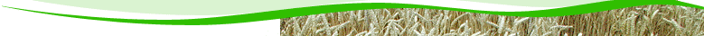

Kontakt
Üldinformatsioon
Dokumendiregister
Üritused
Sordid
Müük
Nõuanded
Publikatsioonid
Geneetilised ressursid
Ilm
Agrometeoroloogilised vaatlusandmed
Taimekaitse
Aruanded
Kraadiõpe
Asukoht
Lingid
Hanked
Lisa artikli nimi menüüsse:
Teraviljad
Suvinisu
Oder
Kaer
Talinisu
Talirukis
Nõuanded:
Teravili
Talinisu
Suvinisu
Kaer
Oder
Rukis
Kaunvili
Põldhernes
Põlduba
Nõuanded:
Põlduba ja -hernes
Talirüps
Prisma
Largo
Nõuanded:
Talirüps ja -raps
Suviraps
Earlybird
Lunedie
Töötajad:
Kartul
Reet
Maret
Piret
Anti
Juku
Ants
Sarme
Vigri
Ando
Fontane
Impala
Princess
Varajane kollane
Manitou
.
Töötajad:
Nõuanded:
Kartuli-lehemädanik
Kartul
Heintaimed
Sale-haguhein
Põldtimut
Harilik aruhein
Kerahein
Aasnurmikas
Karjamaa-raihein
Punane aruhein
Harilik kastehein
Punane ristik
Valge ristik
Roosa ristik
Lutsern
Itaalia raihein
Ohtetu luste
Päideroog
Aas-rebasesaba
Nõuanded:
Ristik
Hein
Köögivili
Aedhernes
Aeduba
Tomat
Redis
Porgand
Söögisibul
Kapsas
Kaalikas
Nõuanded:
Köögivili
Sojauba
Sibulakasvatus
Tomatikasvatus
Aedhernekasvatus